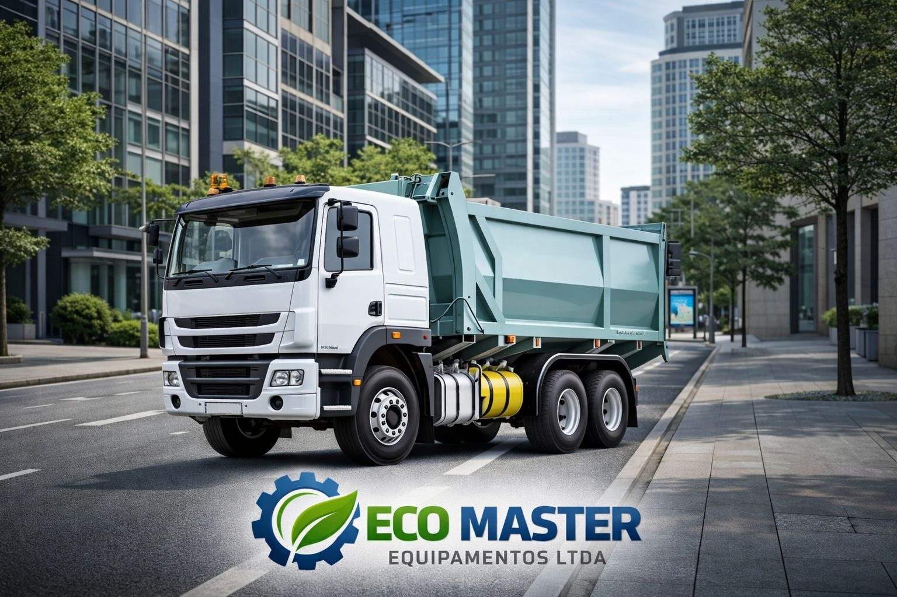
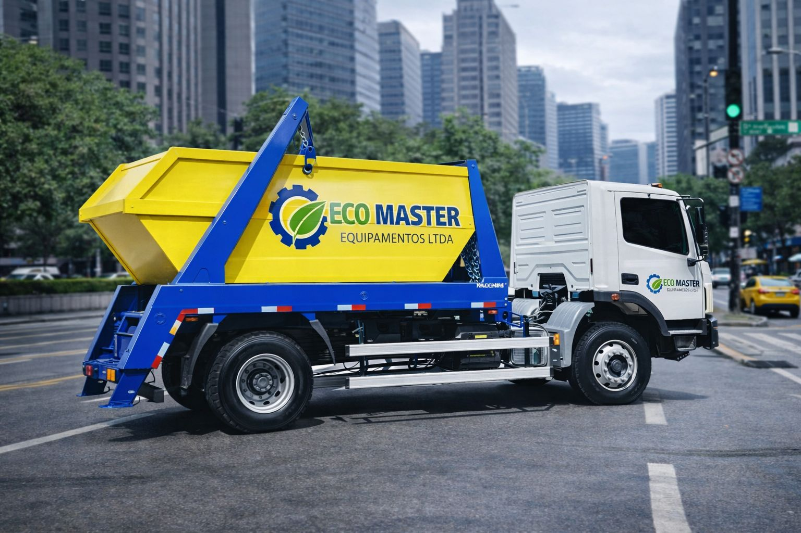

Sobre Nós


Atuamos com foco em eficiência operacional, robustez, segurança e
responsabilidade ambiental, atendendo clientes públicos e privados
em todo o Brasil. Com uma equipe técnica experiente e processos
produtivos consolidados, a Eco Master entrega equipamentos
confiáveis, projetados para operar nas condições mais exigentes do
dia a dia.
Entre em Contato
Por que a Eco Master?
Escolher a Eco Master é optar por
qualidade, durabilidade e suporte técnico especializado. Nossos equipamentos são desenvolvidos para reduzir custos
operacionais, aumentar a produtividade e garantir conformidade com
normas técnicas e exigências de editais públicos.
Diferenciais Eco Master:
- Projetos robustos e funcionais;
- Alto padrão de acabamento e resistência estrutural;
- Soluções personalizadas conforme a aplicação;
-
Atendimento a prefeituras, concessionárias e empresas privadas;
- Suporte técnico e pós-venda eficientes.
Soluções em Aplicação de Implementos Rodoviários
A Eco Master oferece soluções completas em
implementos rodoviários, adequando cada
equipamento à real necessidade do cliente e à aplicação
operacional.
Principais soluções:
- Caminhões coletores compactadores de resíduos;
- Caçambas basculantes;
- Sistemas poliguindaste e roll-on roll-off;
- Compactadores estacionários;
- Plataformas e implementos especiais.
Todos os projetos podem ser configurados conforme chassi,
capacidade, tipo de resíduo e demanda operacional.
Missão, Visão e Valores
Missão:
Desenvolver e fornecer implementos rodoviários e soluções para
serviços urbanos com alto padrão de qualidade, segurança e
eficiência, contribuindo para a melhoria da gestão de resíduos e
da infraestrutura urbana.
Visão:
Ser referência nacional em implementos rodoviários e soluções
sustentáveis para serviços urbanos, reconhecida pela
confiabilidade dos produtos e excelência no atendimento.
Valores:
- Qualidade e robustez técnica;
- Compromisso com o cliente;
- Ética e transparência;
- Inovação aplicada;
- Responsabilidade ambiental.
Soluções Eco Master
A Eco Master atua com soluções completas para aplicação de
implementos rodoviários, oferecendo equipamentos projetados para
máxima performance operacional:
- Coletor compactador de resíduos sólidos;
- Caçambas basculantes para múltiplas aplicações;
- Sistemas poliguindaste e roll-on roll-off;
- Compactadores estacionários;
- Implementos especiais sob medida.
Cada solução é desenvolvida considerando o tipo de operação,
chassi do veículo e necessidades específicas do cliente.
Compromisso com Sustentabilidade
Acreditamos que desenvolvimento e sustentabilidade caminham
juntos. Por isso, nossas soluções contribuem para a
redução de impacto ambiental, otimização da
coleta de resíduos e melhoria da limpeza urbana, promovendo
cidades mais organizadas e eficientes.
Diferenciais Competitivos
- Engenharia aplicada e projetos personalizados;
- Estrutura reforçada e alta durabilidade;
- Redução de custos operacionais;
- Atendimento às normas técnicas vigentes;
- Suporte técnico e pós-venda especializado.